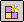

Virtual Components Structure Editor commandCreates and defines the document structure for a new unmanaged assembly project by creating virtual components.
Virtual components are placeholders for actual documents, such as part, sheet metal, and subassembly documents. You create the actual documents later in the design process using the Publish Virtual Components command.
You can also use the Virtual Components Structure Editor dialog box to add existing documents to a new project as predefined components.
The Virtual Component Structure Editor only displays virtual components created in Solid Edge. Virtual components created in a Teamcenter PDM client are not shown in this dialog box.
For more information on working with virtual components, see the Creating and Publishing Virtual Components Help topic.
How do I
Create a virtual component sketch for a documentCreate virtual components
Create a component image
Assign geometry to a virtual component
Position a Virtual Component on a Sketch
Specify whether a component is driven or driving
Change the component type of a virtual component
Publish virtual components